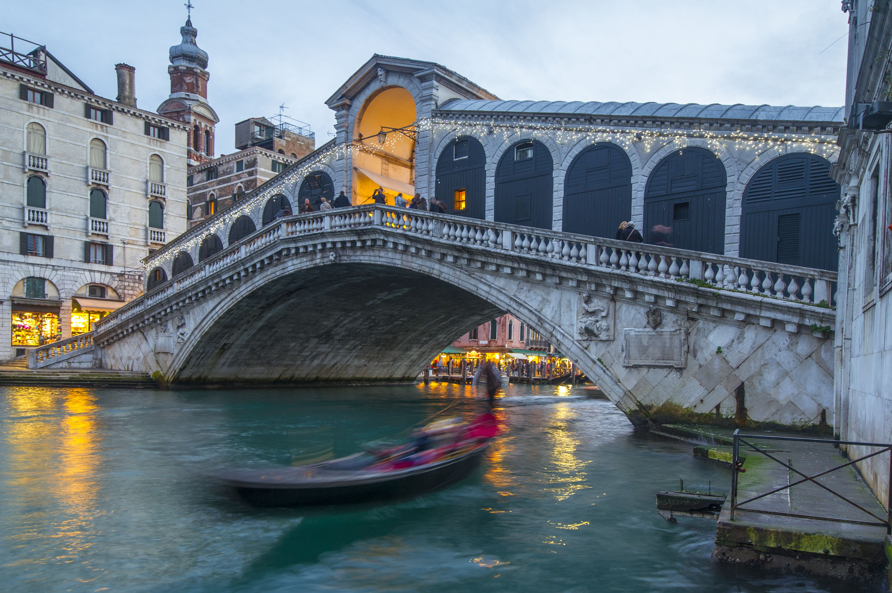

venice, Italy
The Rialto Bridge (Italian: Ponte di Rialto; Venetian: Ponte de Rialto) is a remarkable architectural gem in Venice, Italy. The Rialto Bridge spans the Grand Canal, connecting the sestieri (districts) of San Marco and San Polo. It’s the oldest of the four bridges spanning the Grand Canal
Paris, France

The Eiffel Tower (French: La Tour Eiffel) is an iconic wrought-iron lattice tower located on the Champ de Mars in Paris, France.The Eiffel Tower is arguably the most popular paid attraction in world. Some seven million people visitit each year. The tower features a museum, several restaurants, and the Gustave Eiffel Reception Room,which provides space for business conferences, expositions, cultural events, and social gatherings.
Hamberg, Germany

The Speicherstadt is the world’s largest warehouse complex, spanning an area of 260,000 square metres. The Speicherstadt (German pronunciation: [ˈʃpaɪ̯çɐˌʃtat]), also known as the “City of Warehouses,” is a remarkable historical district in Hamburg, Germany. Its distinctive feature is that the buildings stand on timber-pile foundations, specifically oak logs.